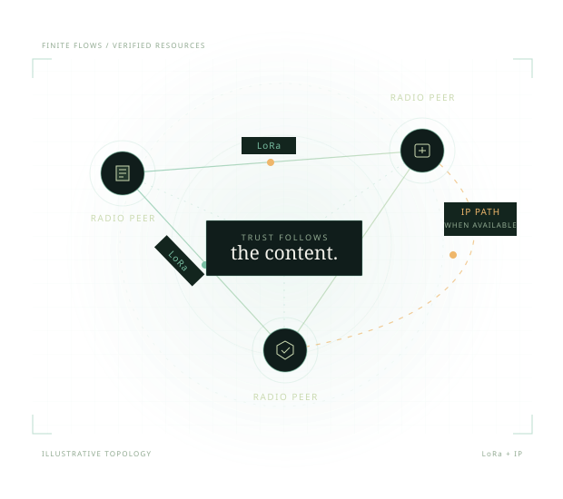

MeshCore
A lightweight packet-radio framework, with embedded companion and repeater roles. Its practical radio focus is part of what inspires this work.
MeshCore projectA SAGE Foundation project / In development
Encrypted messages. Verified resources. A transport designed to make more of every radio link, and use faster paths when they become available.
Experimental, open source, Apache 2.0.
Standalone core. Built for applications beyond Lantern.

01 / Why Meshticulum
A useful network needs both practical radio operation and secure ways to move complete data. Meshticulum brings those priorities together in a separate protocol.
A lightweight packet-radio framework, with embedded companion and repeater roles. Its practical radio focus is part of what inspires this work.
MeshCore projectA cryptographic networking stack spanning local and wide-area networks, including very low-bandwidth links. Its broader networking model informs the other side of the design.
Reticulum overviewBounded radio transfers, authenticated peer and service bindings, verified resources, and an explicit path policy that can use LoRa or IP.
Compare the designsThis is a bridge between design strengths. MeshCore and Reticulum wire compatibility is not implemented.
02 / Architecture
A resource keeps its identity when its path changes. Each transfer still binds the peers, service, limits and original deadline.

Compact resource blocks, receiver credit and selective acknowledgements reduce avoidable framing and per-frame overhead.
Public resources use signed manifests and content hashes. Private envelopes retain recipient encryption and sender signatures.
Deadlines, replay decisions and attempt debt survive cancellation and restart. A retry does not renew permission.
03 / Measured, with scope
We measure useful bytes in authenticated encrypted transfers, and require independent publisher and content verification. Timing boundaries matter.
First DATA-worker call
through the flow ACK
Sender start
through the flow ACK
Five signed parts
and whole-file hash verified
The same run reached 0.296 kB/s from request through publisher verification and 0.107 kB/s over the whole controller, including setup and cleanup. Component intervals are summed over five parts using one host's monotonic clock. Startup-inclusive goodput remains below the 1 kB/s alpha floor.
The earlier LoRa sample at 1,071.3 B/s is numerically 2.61× the 410 B/s contributed test in MeshCore issue #3404. That test used 25 individually acknowledged 128-byte frames at SF7/BW500. Ours used a windowed resource reply. Different workloads and timing boundaries prevent a general speed ranking.
Two earlier finite LoRa samples exceeded 1,000 B/s. The completed 100 kB file is one finite result. Sustained startup-inclusive goodput, reliability on the public hardware examples, faster-profile range and native private forward-secrecy qualification remain open. Current source fixes add no new radio measurement. The project is in development; an alpha release has not been published.
04 / One family, clear boundaries
Created and maintained by Dhillon Andrew Kannabhiran, under the SAGE Foundation.
Meshticulum began in Lantern. The reusable protocol now stands on its own, so other applications can build on it too.
Protocol, cryptography, reliable flow, drivers and verified resources.
Product code, STL and printing files, private SAGE adapters, device policy and deployment.
Persistent agent memory, governance and core infrastructure.
Dependency direction: Lantern → Meshticulum
For developers
Start with a local resource exchange. Follow the protocol boundaries before bringing a radio or a native application into the transfer.
Cryptography, reliable flow, verified resources and path selection, with a diagram of the stack.
02 / Different designsMeshCore, Reticulum and Meshticulum side by side, with security properties and scoped performance evidence.
03 / Try the sourceVerified Python APIs, a local block example, pinned firmware builds and the application-owned flashing workflow.
Explore the work
Read the design, inspect the results, or help build the next piece.